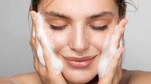

Te dejamos los mejores productos para tu piel
Recuerda consultar con un profesional, estas recomendaciones no
garantizan una reaccion beneficiaria ya que existen las alergias y mas
tipos de situaciones externas de las cuales no tenemos ningun tipo de control,
siga estas recomendaciones bajo su propio riesgo.
PIEL GRASA
Para piel grasa se buscan productos que sean
ligeros y base agua,
Productos:
Jabon de arcilla
Cerave foaming cleanser
La roche posay gel limpiador


PIEL MIXTA
Optar por tónicos con ácidos como el glicólico,
ya que te ayudará a desprender mejor todas las células
muertas y a limpiar el poro en profundidad.
Productos:
Neutrogena: Gel de limpieza facial
Eucerin: Gel limpiador
Citaphil: Limpiador facial


PIEL SECA
La piel seca suele responder bien a las medidas
relacionadas con el estilo de vida, como usar cremas humectantes
y evitar bañarse y ducharse con agua caliente durante mucho tiempo.
Productos:
Cerave: Limpiador hidratante
Bioderma. Hidrabio
Lubriderm: Reparacion intensiva


PIEL SENSIBLE
Opta por un limpiador suave, como un agua micelar
adaptada a las pieles sensibles. Apuesta por productos seguros,
de alta tolerancia, eficaces y adaptados a tu piel.
Productos
Cerave: crema hidratante
Bioderma: Sensibio
Baby Dove


PIEL NORMAL
Las lociones corporales hidratantes de textura ligera
y absorción rápida son ideales para las pieles normales.
Productos
Cocone
Nivea express


PIEL CON TENDENCIA A ACNE
Usa una crema hidratante sin aceite (no comedogénica)
para aliviar estos síntomas. Ácido salicílico. Este ingrediente
puede ayudar a destapar los poros y a prevenir nuevos brotes.
Productos
Neutrogena oil free
Cetaphil barra antibacterial